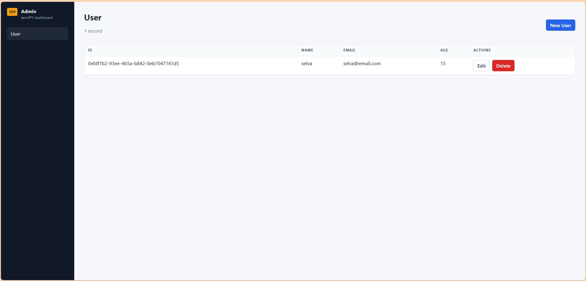
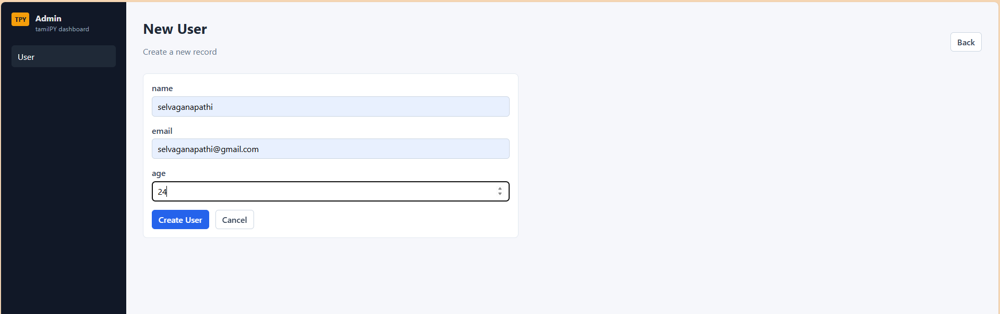
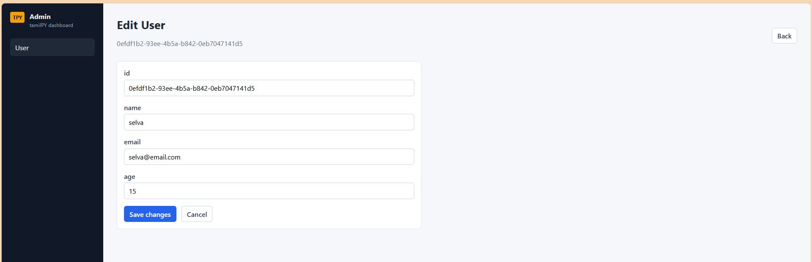
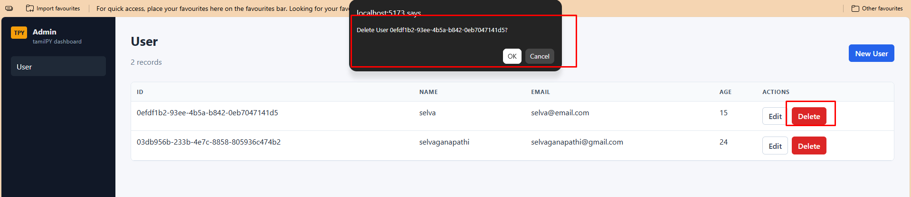

Startup MVPs
Turn one schema file into a running API in minutes, before the idea gets cold.
Schema-driven Python framework
tamilPY reads one schema.tpy file and generates a fully layered FastAPI app — models, migrations, services, and routes — for SQLite, PostgreSQL, MySQL, or MongoDB. You write the fields. It writes the plumbing.
Where it fits
Built for developers who'd rather write a schema once than write the same CRUD boilerplate again.
Turn one schema file into a running API in minutes, before the idea gets cold.
Every project gets the same models, migrations, services, and routes — no drift between teams.
Read a clean, layered architecture: repository → service → controller → route, generated in the open.
Pick SQLite, PostgreSQL, MySQL, or MongoDB at build time. Switch later with one command.
Getting started
Install from PyPI, then scaffold your first project.
$ pip install tamilPY
$ tpy new myapp $ cd myapp
Revision 01
The exact path an application developer follows, start to serve.
tpy new myapp scaffolds folders, schema.tpy, the logger, and seed files.
Define models and fields in schema.tpy — types, primary keys, required, unique.
tpy build asks for SQLite, PostgreSQL, MySQL, or MongoDB, then host, port, user, and password — and writes .env for you.
Run tpy migrate, then tpy seed, to apply the schema and load sample data.
tpy serve starts FastAPI. Logs stream to the console and to storage/logs/app.log.
Capability map
One schema file drives generation, migrations, and a layered FastAPI app.
Edit schema.tpy, run tpy build or tpy crud, and get models, migrations, schemas, repositories, services, controllers, and routes.
SQLite, PostgreSQL, MySQL, or MongoDB via the build wizard. Reconfigure anytime with tpy db configure.
tpy migrate creates the Postgres/MySQL database when missing, then applies ordered migrations.
Each model gets list, show, create, update, and delete endpoints under a plural prefix (e.g. /users).
Repository → Service → Controller → Route — generated consistently so every project looks the same.
Apply schema with migrations, load sample data with seeders, run the API with tpy serve or python main.py.
Console + storage/logs/app.log via app/logger.py. Probe liveness with GET /health.
tpy admin generates a Vite + React dashboard in admin/ with list, create, edit, and delete for every schema model. See screenshots →
tpy doctor checks project files. tpy db info / tpy db ping inspect and test the connection.
Generated UI
Run tpy admin (or tpy build --with-ui) to generate a Vite + React
dashboard in admin/ — list, create, edit, and delete for every model in
schema.tpy.
$ tpy serve $ tpy admin $ cd admin && npm install && npm run dev
API at http://127.0.0.1:8000 ·
Admin UI at http://127.0.0.1:5173




src/data/models.js is built from schema.tpy. Shared list and form pages cover every model — no hand-written page per entity.
Modern SPA under admin/ with Layout, DataTable, and RecordForm components wired to your FastAPI CRUD routes.
After schema changes, run tpy admin again to regenerate the dashboard so the UI stays in sync with your models.
Language reference
Types, constraints, defaults, indexes, foreign keys, and multi-model examples.
# optional provider line
database postgres
model ModelName {
field: type constraint...
}
Use # for comments. Keywords are case-insensitive.
int — integerstring — text / VARCHARfloat — floating pointbool — booleanuuid — UUID primary keysdatetime — timestampprimary — primary keyrequired — required in create APIunique — UNIQUE columnnullable — allow NULL / optionalindex — create an indexdefault <value> — column defaultreferences <Model> — foreign keyNon-primary fields without nullable become NOT NULL in SQL.
database sqlitedatabase postgresdatabase mysqldatabase mongodbUsually written for you by tpy build / tpy db configure.
Examples
Start from these patterns, then run tpy crud.
# 01 — starter User
database sqlite
model User {
id: uuid primary
name: string required
email: string unique required
age: int
}
# 02 — defaults + index
database postgres
model Product {
id: uuid primary
title: string required index
price: float required
active: bool default true
stock: int default 0
status: string default "draft"
notes: string nullable
created_at: datetime nullable
}
# 03 — foreign keys (references)
database postgres
model User {
id: uuid primary
email: string unique required
}
model Post {
id: uuid primary
title: string required index
body: string nullable
user_id: uuid references User
published: bool default false
}
Use references <Model> (or foreign <Model>) on a field. It defaults to the target's id; target a column with references Model.column.
user_id: uuid references User author: uuid references User.id
Compiles to REFERENCES "user" ("id"). Define the referenced model earlier in the schema so its migration runs first.
Add default <value> — a number, quoted string, or true / false.
stock: int default 0 active: bool default true status: string default "draft"
Fields with a default become optional in the create API.
Add the index keyword to generate an index:
title: string required index
Emits CREATE INDEX idx_<table>_<column>. Primary keys are already indexed.
Generated as ordered files from model order in the schema:
001_user_migration.py002_post_migration.pyModel User → prefix /users:
GET /users/GET /users/{id}POST /users/PUT /users/{id}DELETE /users/{id}CLI reference
Full client command surface — including helpers that are easy to miss.
tpy new <name> — create projecttpy build — DB wizard + generate CRUDtpy build --skip-db — generate using existing .envtpy build --with-ui — generate CRUD and admin/tpy crud — regenerate layers from schema onlytpy admin — generate the React admin dashboardtpy doctor — validate project filestpy version — show framework versiontpy db configure — interactive DB wizardtpy db info — show provider + URLtpy db ping — test connectiontpy migrate — create DB if needed + apply pendingtpy migrate up — same as migratetpy migrate rollback — undo latesttpy migrate status — list applied migrationstpy seed — run database/seedstpy serve — uvicorn on app.main:apptpy serve --host 0.0.0.0tpy serve --port 8080tpy serve --reload / --no-reloadpython main.py — root launcherGET /health — health checkOutput map
After tpy build / tpy crud, each model produces this backend stack. Add tpy admin for the generated React dashboard.
app/models/<name>.pyPydantic model of your fields.
database/migrations/NNN_<name>_migration.pyOrdered up / down table migration.
app/schemas/<name>.pyCreate, Update, and Response request/response models.
app/repositories/<name>.pySQL data access: all, find, create, update, delete.
app/services/<name>.pyThin business layer over the repository.
app/controllers + app/routesFastAPI handlers and routers wired into app/main.py.
Scaffold
Created by tpy new myapp.
myapp/
main.py # uvicorn launcher → app.main:app
schema.tpy
tpy.toml
.env
app/
main.py # FastAPI app + /health
logger.py
models/ schemas/ repositories/
services/ controllers/ routes/
providers/database.py
database/
migrations/ # 001_user_migration.py …
seeds/
storage/logs/
admin/ # Vite + React dashboard from tpy admin
tests/
Reference sheet
The commands you'll reach for every day.
tpy new <name> — create projecttpy build — DB wizard + generate CRUDtpy build --skip-db — use existing .envtpy crud — regenerate CRUD from schematpy admin — generate React admin UItpy doctor — validate project healthtpy db configure — change DB anytimetpy db info — show provider + URLtpy db ping — test connectiontpy migrate — create DB if needed + migratetpy migrate rollback — undo latesttpy migrate status — list appliedtpy seed — run database/seedstpy serve — start API serverpython main.py — root launcherapp/logger.py — client loggerstorage/logs/app.log — log file/health — health endpoint/docs — Swagger UImodel User {
id: uuid primary
name: string required
email: string unique
age: int
}
More patterns → Schema section